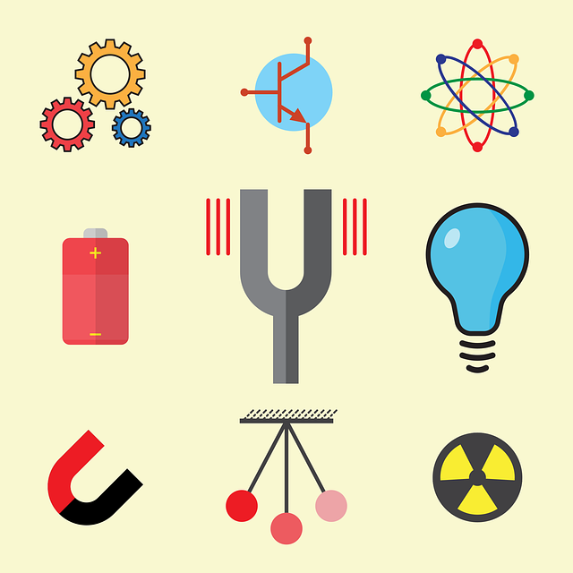
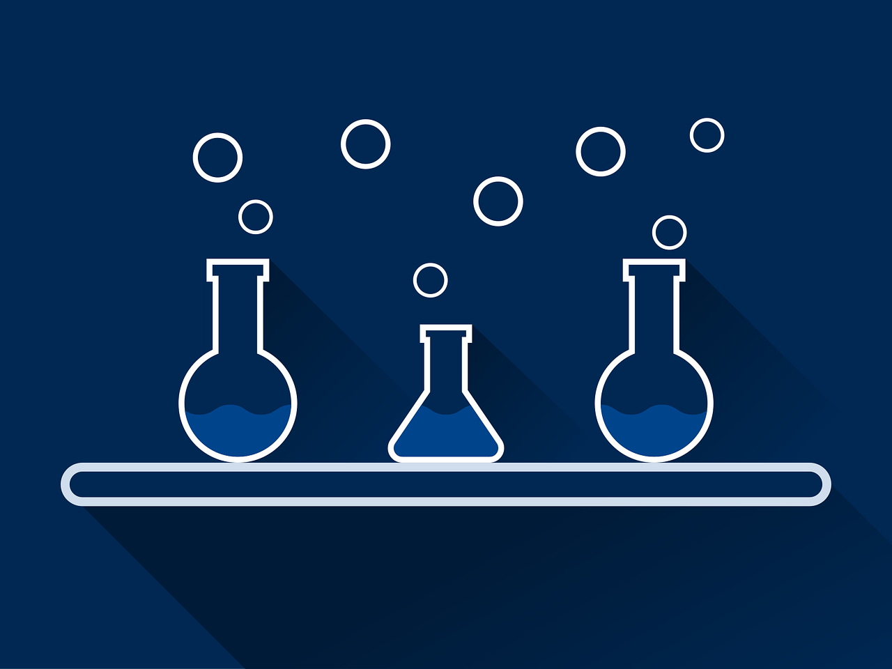
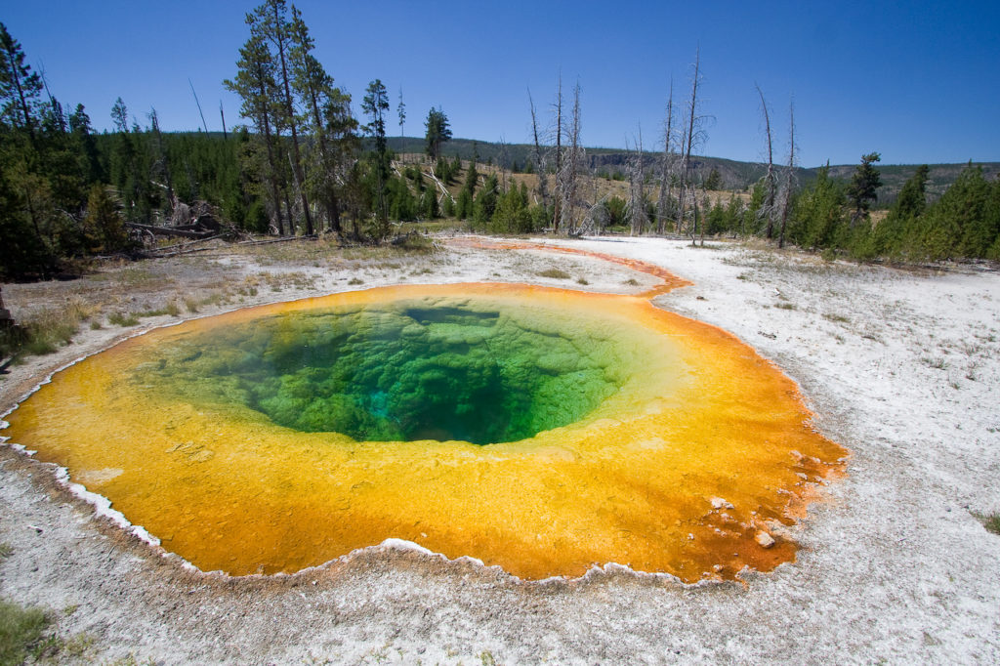

Introduction
Science is a tool to better understand and communicate the feeling of awe that we get when we look up at the stars in the night sky.
Follow this link for our partners page for more information on science beyond what is on this page!
Physics

Physics is the most fundamental of the sciences. Its origins are tied closely with the development of mathematics, philosphy,
and the development of technology. Everything around you will be enriched with a fuller understanding of physics: from what
you see, touch, hear, and feel. The atoms that make up all the material around us can be modeled using electricity and magnetism,
quantum mechanics, and other more technical theories. Physics also describes that paths of planets, stars, black holes, and
supernove.
It's true, mathematics is used heavily to communicate ideas within physics. However, you can understand physics at an intuitive
level if you do experiments and ask questions about what you see. Math is used to help communicate, which means it isn't the
the only may to communicate.
Who is a physicist?
- Experimentors at international labs such as CERN
- Researchers at universities and colleges around the world
- Astronomers who look up at the stars
Chemistry

Chemistry is the language to describe how elements and molecules interact with other particle like objects and their environment.
The periodic table of elements is the central concept in introductory chemistry. There are roughly 100 elements that are stable
on earth's biosphere. Some elements, if isolated, can react violently by just being exposed to the air around us. Some elements
are so stable that it takes very particular conditions to force them to react/interact with other particle like objects.
Elements, as a concept, exist to organize the different ways atoms interact. Atoms have two basic components: electrons and the
nucleus. Furthermore, the nucleus is composed of both protons and neutrons. Hydrogen, the most basic element (or atom), is an
exception and can have only a proton making up its nucleus.
Who is a chemist?
- Chemical Engineers
- Doctors who research vaccines
- Materials scientists that engineer plastics, metals, and fabrics
Biology
Biology is the language of how chemistry and physics comes together to construct structure in living organisms. Large molecules
called proteins, lipids, RNA, and DNA make up the building blocks of cells, tissues, and organs. Although there are many
other molecules
that make up organisms, these are the major building blocks of life on Earth - and possibly other locations in the universe.
Biology is also where the study of medicine has its roots. In the subfield biochemistry, the study of virsus, bacterium, and animals
(which includes humans) provides the language to discuss pathogens, disease, and medicines. There are other subfields such as:
genetics, which studies DNA; virology, which studies viruses; neurology, which studies nerve tissue; and many, many others!
Who is a biologist?
- Neuro surgeons
- Veterinarians who treat your pets
- Ecologist who study the way species interact with their ecosystems and environment
Geology

Geology has its roots on Earth, along with all the sciences thus established. However, planetary geology is the study of objects
throughout our solar system, and beyond. Geo means earth, and is derived from greek.
Who is a geologist?
- surveyors
- Archaeologists when they date fossils or lost civilizations that they discover
- Volcanologists who study volcanoes